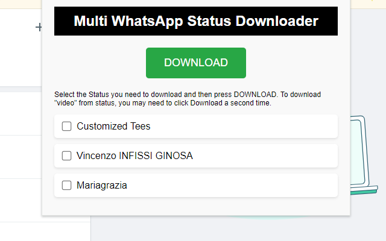
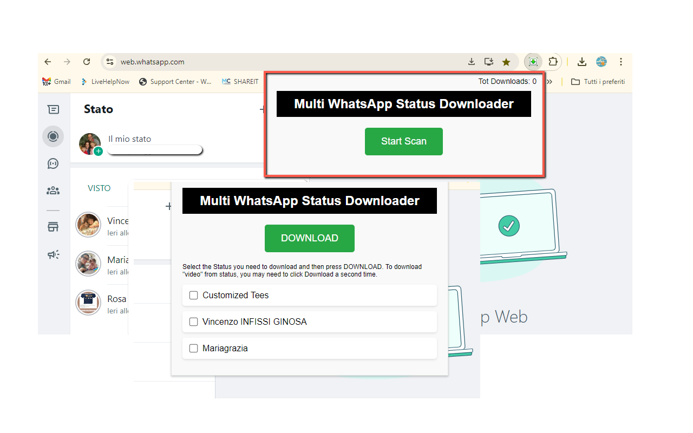

WA Status Saver
If youre a fan of WhatsApp Web and constantly clicking through your contacts' statuses, youve probably wished you could just save the good ones. Enter WA Status Saver the easiest way to download WhatsApp Web statuses (photos or videos) directly to your computer with a click.
Whether it's your best friends new selfie, a funny meme video, or a quote you loved, WA Status Saver helps you grab and keep that status in seconds. No more asking them to send it, no more taking screenshots. Just scan and save what you want.
This extension is super lightweight and intuitive. Just open WhatsApp Web, click the extension, and it'll scan all statuses currently available. Youll get a visual preview and checkboxes to pick exactly which ones to download. You can even choose between images or videos and batch save everything at once.
📄How to Use
- Install the extension from the Chrome Web Store.
- Open WhatsApp Web and make sure statuses are loaded.
- Click the WA Status Saver icon in the Chrome toolbar.
- Choose the images or videos you want to save.
- Click Download and you're done!
📷 Screenshots


✅ Features
- View and download any status from WhatsApp Web
- Supports both photo and video statuses
- Batch download all statuses with one click
- Preview before saving
- No account or login needed beyond WhatsApp Web
Never miss a moment again. Download your favorite WhatsApp statuses before they disappear all from the comfort of your browser.
View on Chrome Web Store